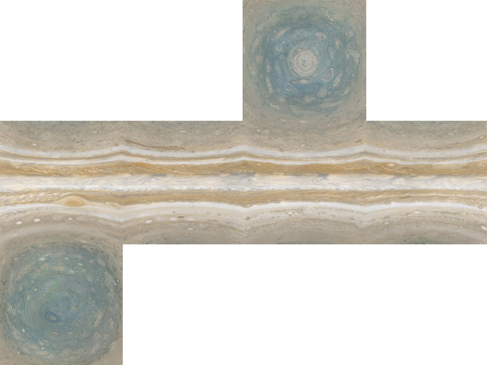

01 / A world in motion
眼前的条纹，
是一整片流动的天空。
木星没有清晰的固体表面。明亮的“带”和较暗的“条纹”是不同纬度的云层与大气环流，它们沿不同方向飞快地运动。
大红斑是一场持续数百年的巨大风暴。它的大小与形态会变化；我们看到的每张照片，都是这片云海在某一刻的模样。
- 主要组成
- 氢 与 氦
- 一天，仅约
- 9.9 小时
Solar laboratory / Planet 05
从翻涌的云海，到冰封的海洋。
正在准备木星与四颗卫星LOADING LOCAL SURFACE MAPS

当前设备未能启动三维视图；下面的影像、介绍与轨道演示仍可阅读。
拖动旋转 · 滚轮 / 双指缩放
NASA / JPL · 云层影像贴图
切换观察对象时，镜头平滑移动并拉近；木星与四颗卫星始终保持原位和同一真实比例。全景标签的圆点仅用于定位。轨道与光照为教学示意，非实时星历。
01 / A world in motion
木星没有清晰的固体表面。明亮的“带”和较暗的“条纹”是不同纬度的云层与大气环流，它们沿不同方向飞快地运动。
大红斑是一场持续数百年的巨大风暴。它的大小与形态会变化；我们看到的每张照片，都是这片云海在某一刻的模样。
02 / The Galilean family
1610 年，人类发现这些光点围绕木星运行。
从内向外，它们是木卫一、木卫二、木卫三、木卫四。
Io
潮汐作用不断揉动内部，火山喷发重写地表。硫化合物让它看起来像一块斑斓的调色板。
Ganymede
太阳系最大的卫星，比水星还大；也是目前唯一已知拥有内禀磁场的卫星，深处有海洋的证据。
Callisto
密布撞击坑的古老冰岩世界，保存了数十亿年的痕迹。相对平静的外表下，也可能藏有咸水层。
卡片上方展示全球拼接纹理的局部裁切。点击后镜头会移动并拉近对应卫星，可拖动环绕与缩放观察。
03 / Special focus — Europa
A small moon. A profound question.
一颗比月球还小的卫星，可能保存着比地球全部海洋更多的液态水。我们还没有钻穿冰层；海洋的判断来自磁场、地质与内部结构等多条证据。
木卫二最吸引人的问题，是这些水能否与岩石、能量和化学原料持续交换，从而形成适合生命存在的环境。
影像：NASA/JPL-Caltech/SETI Institute · PIA19048
选择右侧层次，看看每一层如何影响这个世界。
01 / Ice shell
褐色线条标记裂纹、脊和不同材料。局部冰块似乎曾断裂、漂移并重新冻结，说明表面经历过更新；表层与海洋之间如何交换物质，仍有待查明。
伽利略号测到的感应磁场，可以由冰下导电的咸水层解释。年轻的表面、裂纹与混沌地形，也与活动的冰壳相吻合。
较强证据 · 仍需进一步约束木星引力与卫星间的共振使轨道保持轻微偏心。周期性的拉伸和释放能产生潮汐热，内部放射性衰变也可贡献热量。
研究重点 · 能量与海底交换还需要可利用的能量、合适的化学条件与稳定环境。目前没有发现木卫二生命；疑似羽流及其与海洋的联系也仍需验证。
开放问题 · 宜居性尚待调查The next close look
2024 年发射，计划于 2030 年 4 月抵达木星。探测器将环绕木星，并进行 49 次木卫二近距离飞掠，联合调查冰壳、成分和地质，判断冰下是否存在宜居环境。它的任务目标是评估宜居条件，并非直接寻找生命个体。
上方三维系统与此时间轴同步。模型不计算卫星食、凌木、轨道倾角与引力摄动，不能用于预报实际观测事件。
05 / Explorers of the Jovian system
任务时间与计划核对：2026-10-03
首次长期环绕木星。它的卫星影像与磁场观测，为冰下海洋研究留下关键线索。
伽利略号 ↗研究木星云层深处与磁场，并近距离飞掠木卫三、木卫二和木卫一，带来新的影像与测量。
朱诺号 ↗围绕木卫二的宜居性展开调查，通过多次飞掠测量冰壳、地表成分与内部海洋的性质。
木卫二快船 ↗考察木卫二、木卫三与木卫四，最终将重点转向木卫三轨道，比较不同冰卫星的演化。
木星冰卫星探测器 ↗